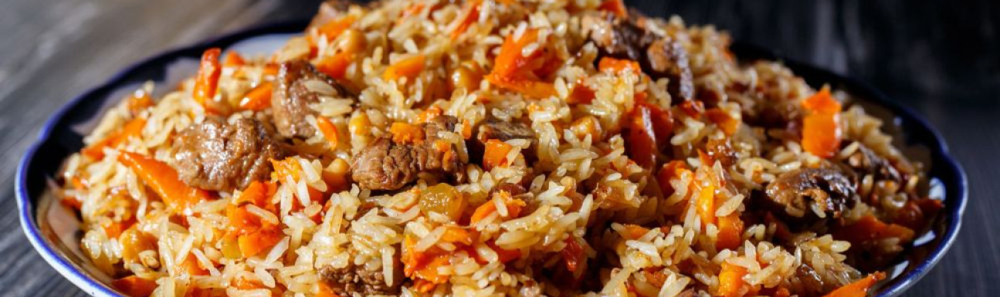

приготовление:
-
Сильно разогреть казан или толстостенную кастрюлю и налить растительное масло слоем около 1–2 см (в зависимости от ширины посуды).
-
Взять 350 г говядины и нарезать кубиками размером примерно 1–1,5 см. Выложить мясо обжариваться, пока вся жидкость полностью не выпарится и масло снова не станет прозрачным. Это хорошо слышно — звук жарки меняется.
-
Лук нарезать кубиками — по объёму его должно быть примерно столько же, сколько мяса. Морковь нарезать соломкой — также по объёму примерно как мясо. Добавить лук, обжаривать до мягкости и прозрачности, затем добавить морковь. Готовить всё вместе, постоянно помешивая, чтобы ничего не пригорало.
-
Когда мясо и овощи хорошо обжарились, добавить соль и специи. Специй и соли не жалеть — часть вкуса заберёт рис. Дать приправам прогреться и раскрыться около минуты.
-
Параллельно несколько раз тщательно промыть 3 чашки риса. Лучше использовать ароматный длиннозёрный рис. Уменьшить огонь до минимального. Разровнять зажарку, сверху высыпать рис и аккуратно распределить его ровным слоем. Сверху щедро посыпать куркумой и ещё немного посолить. Залить горячей водой так, чтобы она была на 1,5 см выше уровня риса. Лить воду через ложку, чтобы не размыть слой. Накрыть крышкой и оставить вариться 12–15 минут.
-
Очистить 3 зубчика чеснока. Когда вода практически полностью впитается (может остаться совсем немного по краям), равномерно воткнуть чеснок в рис, закрыть крышкой и довести плов до готовности ещё 5–10 минут. Выключить огонь, дать плову постоять под крышкой несколько минут, затем аккуратно перемешать и подавать.